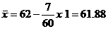

STAM101 :: Lecture 04 ::Measures of averages

Mean – median – mode – geometric mean – harmonic mean – computation of the above statistics for raw and grouped data - merits and demerits - measures of location – percentiles – quartiles - computation of the above statistics for raw and grouped data
In the study of a population with respect to one in which we are interested we may get a large number of observations. It is not possible to grasp any idea about the characteristic when we look at all the observations. So it is better to get one number for one group. That number must be a good representative one for all the observations to give a clear picture of that characteristic. Such representative number can be a central value for all these observations. This central value is called a measure of central tendency or an average or a measure of locations. There are five averages. Among them mean, median and mode are called simple averages and the other two averages geometric mean and harmonic mean are called special averages.
Arithmetic mean or mean
Arithmetic mean or simply the mean of a variable is defined as the sum of the observations divided by the number of observations. It is denoted by the symbol If the variable x assumes n values x1, x2 … xn then the mean is given by
This formula is for the ungrouped or raw data.
Calculate the mean for pH levels of soil 6.8, 6.6, 5.2, 5.6, 5.8
Solution
Grouped Data
The mean for grouped data is obtained from the following formula:
Where x = the mid-point of individual class
f = the frequency of individual class
n = the sum of the frequencies or total frequencies in a sample.
Short-cut method
Where
A = any value in x
n = total frequency
c = width of the class interval
Example 2
Given the following frequency distribution, calculate the arithmetic mean
Marks : 64 63 62 61 60 59
Students : 8 18 12 9 7 6
Solution
X |
F |
Fx |
D=x-A |
Fd |
64 |
8 |
512 |
2 |
16 |
63 |
18 |
1134 |
1 |
18 |
62 |
12 |
744 |
0 |
0 |
61 |
9 |
549 |
-1 |
-9 |
60 |
7 |
420 |
-2 |
-14 |
59 |
6 |
354 |
-3 |
-18 |
|
60 |
3713 |
|
-7 |
Direct method

Short-cut method
Here A = 62

Example 3
For the frequency distribution of seed yield of seasamum given in table, calculate the mean yield per plot.
Yield per plot in(in g) |
64.5-84.5 |
84.5-104.5 |
104.5-124.5 |
124.5-144.5 |
No of plots |
3 |
5 |
7 |
20 |
Solution
Yield ( in g) |
No of Plots (f) |
Mid X |
Fd |
|
64.5-84.5 |
3 |
74.5 |
-1 |
-3 |
84.5-104.5 |
5 |
94.5 |
0 |
0 |
104.5-124.5 |
7 |
114.5 |
1 |
7 |
124.5-144.5 |
20 |
134.5 |
2 |
40 |
Total |
35 |
|
|
44 |
A=94.5
The mean yield per plot is
Direct method:
= =119.64 gms
Shortcut method

Merits and demerits of Arithmetic mean
Merits
1. It is rigidly defined.
2. It is easy to understand and easy to calculate.
3. If the number of items is sufficiently large, it is more accurate and more reliable.
4. It is a calculated value and is not based on its position in the series.
5. It is possible to calculate even if some of the details of the data are lacking.
6. Of all averages, it is affected least by fluctuations of sampling.
7. It provides a good basis for comparison.
Demerits
1. It cannot be obtained by inspection nor located through a frequency graph.
2. It cannot be in the study of qualitative phenomena not capable of numerical measurement i.e.
Intelligence, beauty, honesty etc.,
3. It can ignore any single item only at the risk of losing its accuracy.
4. It is affected very much by extreme values.
5. It cannot be calculated for open-end classes.
6. It may lead to fallacious conclusions, if the details of the data from which it is computed are
not given.
Median
The median is the middle most item that divides the group into two equal parts, one part comprising all values greater, and the other, all values less than that item.
Ungrouped or Raw data
Arrange the given values in the ascending order. If the number of values are odd, median is the middle value
If the number of values are even, median is the mean of middle two values.
By formula
When n is odd, Median = Md = 
When n is even, Average of
Example 4
If the weights of sorghum ear heads are 45, 60,48,100,65 gms, calculate the median
Solution
Here n = 5
First arrange it in ascending order
45, 48, 60, 65, 100
Median =
==60
Example 5
If the sorghum ear- heads are 5,48, 60, 65, 65, 100 gms, calculate the median.
Solution
Here n = 6
Grouped data
In a grouped distribution, values are associated with frequencies. Grouping can be in the form of a discrete frequency distribution or a continuous frequency distribution. Whatever may be the type of distribution, cumulative frequencies have to be calculated to know the total number of items.
Cumulative frequency (cf)
Cumulative frequency of each class is the sum of the frequency of the class and the frequencies of the pervious classes, ie adding the frequencies successively, so that the last cumulative frequency gives the total number of items.
Discrete Series
Step1: Find cumulative frequencies.
Step3: See in the cumulative frequencies the value just greater than 
Step4: Then the corresponding value of x is median.
Example 6
The following data pertaining to the number of insects per plant. Find median number of insects per plant.
Number of insects per plant (x) |
1 |
2 |
3 |
4 |
5 |
6 |
7 |
8 |
9 |
10 |
11 |
12 |
No. of plants(f) |
1 |
3 |
5 |
6 |
10 |
13 |
9 |
5 |
3 |
2 |
2 |
1 |
Solution
Form the cumulative frequency table
x |
f |
cf |
1 |
1 |
1 |
2 |
3 |
4 |
3 |
5 |
9 |
4 |
6 |
15 |
5 |
10 |
25 |
6 |
13 |
38 |
7 |
9 |
47 |
8 |
5 |
52 |
9 |
3 |
55 |
10 |
2 |
57 |
11 |
2 |
59 |
12 |
1 |
60 |
|
60 |
|
Median = size of
Here the number of observations is even. Therefore median = average of (n/2)th item and (n/2+1)th item.
= (30th item +31st item) / 2 = (6+6)/2 = 6
Hence the median size is 6 insects per plant.
Continuous Series
The steps given below are followed for the calculation of median in continuous series.
Step1: Find cumulative frequencies.
Step2: Find 
Step3: See in the cumulative frequency the value first greater than , Then the corresponding class interval is called the Median class. Then apply the formula
Median =
where l = Lower limit of the medianal class
m = cumulative frequency preceding the medianal class
c = width of the class
f =frequency in the median class.
n=Total frequency.
Example 7
For the frequency distribution of weights of sorghum ear-heads given in table below. Calculate the median.
Weights of ear heads ( in g) |
No of ear heads (f) |
Less than class |
Cumulative frequency (m) |
60-80 |
22 |
<80 |
22 |
80-100 |
38 |
<100 |
60 |
100-120 |
45 |
<120 |
105 |
120-140 |
35 |
<140 |
140 |
140-160 |
24 |
<160 |
164 |
Total |
164 |
|
|
Solution
Median =
=
It lies between 60 and 105. Corresponding to 60 the less than class is 100 and corresponding to 105 the less than class is 120. Therefore the medianal class is 100-120. Its lower limit is 100.
Here  100, n=164 , f = 45 , c = 20, m =60
100, n=164 , f = 45 , c = 20, m =60
Median =
Merits of Median
1. Median is not influenced by extreme values because it is a positional average.
2. Median can be calculated in case of distribution with open-end intervals.
3. Median can be located even if the data are incomplete.
Demerits of Median
1. A slight change in the series may bring drastic change in median value.
2. In case of even number of items or continuous series, median is an estimated value other than any value in the series.
3. It is not suitable for further mathematical treatment except its use in calculating mean deviation.
4. It does not take into account all the observations.
Mode
The mode refers to that value in a distribution, which occur most frequently. It is an actual value, which has the highest concentration of items in and around it. It shows the centre of concentration of the frequency in around a given value. Therefore, where the purpose is to know the point of the highest concentration it is preferred. It is, thus, a positional measure.
Its importance is very great in agriculture like to find typical height of a crop variety, maximum source of irrigation in a region, maximum disease prone paddy variety. Thus the mode is an important measure in case of qualitative data.
Computation of the mode
Ungrouped or Raw Data
For ungrouped data or a series of individual observations, mode is often found by mere inspection.
Example 8
Find the mode for the following seed weight
2 , 7, 10, 15, 10, 17, 8, 10, 2 gms
\Mode = 10
In some cases the mode may be absent while in some cases there may be more than one mode.
Example 9
(1) 12, 10, 15, 24, 30 (no mode)
(2) 7, 10, 15, 12, 7, 14, 24, 10, 7, 20, 10
the modal values are 7 and 10 as both occur 3 times each.
Grouped Data
For Discrete distribution, see the highest frequency and corresponding value of x is mode.
Example:
Find the mode for the following
Weight of sorghum in gms (x) |
No. of ear head(f) |
50 |
4 |
65 |
6 |
75 |
16 |
80 |
8 |
95 |
7 |
100 |
4 |
Solution
The maximum frequency is 16. The corresponding x value is 75.
\ mode = 75 gms.
Continuous distribution
Locate the highest frequency the class corresponding to that frequency is called the modal class. Then apply the formula.
Mode = 
Where  = lower limit of the model class
= lower limit of the model class
 = the frequency of the class preceding the model class
= the frequency of the class preceding the model class
 = the frequency of the class succeeding the model class
= the frequency of the class succeeding the model class
and c = class interval
Example 10
For the frequency distribution of weights of sorghum ear-heads given in table below. Calculate the mode
Weights of ear heads (g) |
No of ear heads (f) |
|
60-80 |
22 |
|
80-100 |
|
|
100-120 |
45 |
f |
120-140 |
35 |
|
140-160 |
20 |
|
Total |
160 |
|
Solution
Mode =
Here 100, f = 45, c = 20, m =60,  =38,
=38,  =35
=35
Mode =
=
= 109.589
Geometric mean
The geometric mean of a series containing n observations is the nth root of the product of the values.
If x1, x2…, xn are observations then
G.M=
=
Log GM =
=
=
GM = Antilog
For grouped data
GM = Antilog 
GM is used in studies like bacterial growth, cell division, etc.
Example 11
If the weights of sorghum ear heads are 45, 60, 48,100, 65 gms. Find the Geometric mean for the following data
Weight of ear head x (g) |
Log x |
45 |
1.653 |
60 |
1.778 |
48 |
1.681 |
100 |
2.000 |
65 |
1.813 |
Total |
8.925 |
Solution
Here n = 5
GM = Antilog 
= Antilog
= Antilog
= 60.95
Grouped Data
Example 12
Find the Geometric mean for the following
Weight of sorghum (x) |
No. of ear head(f) |
50 |
4 |
65 |
6 |
75 |
16 |
80 |
8 |
95 |
7 |
100 |
4 |
Solution
Weight of sorghum (x) |
No. of ear head(f) |
Log x |
f x log x |
50 |
5 |
1.699 |
8.495 |
63 |
10 |
10.799 |
17.99 |
65 |
5 |
1.813 |
9.065 |
130 |
15 |
2.114 |
31.71 |
135 |
15 |
2.130 |
31.95 |
Total |
50 |
9.555 |
99.21 |
Here n= 50
GM = Antilog 
= Antilog
= Antilog 1.9842 = 96.43
Continuous distribution
Example 13
For the frequency distribution of weights of sorghum ear-heads given in table below. Calculate the Geometric mean
Weights of ear heads ( in g) |
No of ear heads (f) |
60-80 |
22 |
80-100 |
38 |
100-120 |
45 |
120-140 |
35 |
140-160 |
20 |
Total |
160 |
Solution
Weights of ear heads ( in g) |
No of ear heads (f) |
Mid x |
Log x |
f log x |
60-80 |
22 |
70 |
1.845 |
40 |
80-100 |
38 |
90 |
1.954 |
74.25 |
100-120 |
45 |
110 |
2.041 |
91.85 |
120-140 |
35 |
130 |
2.114 |
73.99 |
140-160 |
20 |
150 |
2.176 |
43.52 |
Total |
160 |
|
|
324.2 |
Here n = 160
GM = Antilog
= Antilog
= Antilog
= 106.23
Harmonic mean (H.M)
Harmonic mean of a set of observations is defined as the reciprocal of the arithmetic average of the reciprocal of the given values. If x1, x2…..xn are n observations,
For a frequency distribution
H.M is used when we are dealing with speed, rates, etc.
Example 13
From the given data 5, 10,17,24,30 calculate H.M.
X |
|
5 |
0.2000 |
10 |
0.1000 |
17 |
0.0588 |
24 |
0.0417 |
30 |
0.4338 |
= 11.526
Example 14
Number of tomatoes per plant are given below. Calculate the harmonic mean.
Number of tomatoes per plant |
20 |
21 |
22 |
23 |
24 |
25 |
Number of plants |
4 |
2 |
7 |
1 |
3 |
1 |
Solution
Number of tomatoes per plant (x) |
No of plants(f) |
|
|
20 |
4 |
0.0500 |
0.2000 |
21 |
2 |
0.0476 |
0.0952 |
22 |
7 |
0.0454 |
0.3178 |
23 |
1 |
0.0435 |
0.0435 |
24 |
3 |
0.0417 |
0.1251 |
25 |
1 |
0.0400 |
0.0400 |
|
18 |
|
0.8216 |
Merits of H.M
1. It is rigidly defined.
2. It is defined on all observations.
3. It is amenable to further algebraic treatment.
4. It is the most suitable average when it is desired to give greater weight to smaller observations and less weight to the larger ones.
Demerits of H.M
1. It is not easily understood.
2. It is difficult to compute.
3. It is only a summary figure and may not be the actual item in the series
4. It gives greater importance to small items and is therefore, useful only when small items have
to be given greater weightage.
5. It is rarely used in grouped data.
Percentiles
The percentile values divide the distribution into 100 parts each containing 1 percent of the cases. The xth percentile is that value below which x percent of values in the distribution fall. It may be noted that the median is the 50th percentile.
For raw data, first arrange the n observations in increasing order. Then the xth percentile is given by
For a frequency distribution the xth percentile is given by
Where
 = lower limit of the percentile calss which contains the xth percentile value (x. n /100)
= lower limit of the percentile calss which contains the xth percentile value (x. n /100)
= cumulative frequency uotp
= frequency of the percentile class
C= class interval
N= total number of observations
Percentile for Raw Data or Ungrouped Data
Example 15
The following are the paddy yields (kg/plot) from 14 plots: 30,32,35,38,40.42,48,49,52,55,58,60,62,and 65 ( after arranging in ascending order). The computation of 25th percentile (Q1) and 75th percentile (Q3) are given below:
= 3rd item + (4th item – 3rd item)
= 35 + (38-35) 
= 35 + 3 = 37.25 kg
= 37.25 kg
= 11th item + (12th item – 11th item)
= 55 +(58-55) 
= 55 + 3 = 55.75 kg
Example 16
The frequency distribution of weights of 190 sorghum ear-heads are given below. Compute 25th percentile and 75th percentile.
Weight of ear-heads (in g) |
No of ear heads |
40-60 |
6 |
60-80 |
28 |
80-100 |
35 |
100-120 |
55 |
120-140 |
30 |
140-160 |
15 |
160-180 |
12 |
180-200 |
9 |
Total |
190 |
Solution
Weight of ear-heads (in g) |
No of ear heads |
Less than class |
Cumulative frequency |
40-60 |
6 |
< 60 |
6 |
60-80 |
28 |
< 80 |
47.5 |
80-100 |
35 |
<100 |
69 |
100-120 |
55 |
<120 |
142.5 |
120-140 |
30 |
<140 |
154 |
140-160 |
15 |
<160 |
169 |
160-180 |
12 |
<180 |
181 |
180-200 |
9 |
<200 |
190 |
Total |
190 |
|
|
or P25, first find out  , and for , and proceed as in the case of median. For P25, we have = 47.5.
, and for , and proceed as in the case of median. For P25, we have = 47.5.
The value 47.5 lies between 34 and 69. Therefore, the percentile class is 80-100. Hence,
= 80 +7.71 or 87.71 g.
Similarly,
Class
= 120 +14.33 =134.33 g.
Quartiles
The quartiles divide the distribution in four parts. There are three quartiles. The second quartile divides the distribution into two halves and therefore is the same as the median. The first (lower).quartile (Q1) marks off the first one-fourth, the third (upper) quartile (Q3) marks off the three-fourth. It may be noted that the second quartile is the value of the median and 50th percentile.
Raw or ungrouped data
First arrange the given data in the increasing order and use the formula for Q1 and Q3 then quartile deviation, Q.D is given by
Where item and  item
item
Example 18
Compute quartiles for the data given below (grains/panicles) 25, 18, 30, 8, 15, 5, 10, 35, 40, 45
Solution
5, 8, 10, 15, 18, 25, 30, 35, 40, 45

= (2.75)th item
= 2nd item + (3rd item – 2nd item)
= 8+ (10-8)
(10-8)
= 8+x 2
= 8+1.5
= 9.5
= 3 x (2.75) th item
= (8.75)th item
= 8th item + (9th item – 8th item)
(9th item – 8th item)
= 35+(40-35)
= 35+1.25
= 36.25
Discrete Series
Step1: Find cumulative frequencies.
Step2: Find 
Step3: See in the cumulative frequencies, the value just greater than , then the corresponding value of x is Q1
Step4: Find
Step5: See in the cumulative frequencies, the value just greater than  ,then the corresponding value of x is Q3
,then the corresponding value of x is Q3
Example 19
Compute quartiles for the data given bellow (insects/plant).
X |
5 |
8 |
12 |
15 |
19 |
24 |
30 |
f |
4 |
3 |
2 |
4 |
5 |
2 |
4 |
Solution
x |
f |
cf |
5 |
4 |
4 |
8 |
3 |
7 |
12 |
2 |
9 |
15 |
4 |
13 |
19 |
5 |
18 |
24 |
2 |
20 |
=18.75th item \Q1= 8; Q3=24
Continuous series
Step1: Find cumulative frequencies
Step2: Find
Step3: See in the cumulative frequencies, the value just greater than , then the corresponding class interval is called first quartile class.
, then the corresponding class interval is called first quartile class.
Step4: Find See in the cumulative frequencies the value just greater than  then the corresponding class interval is called 3rd quartile class. Then apply the respective formulae
then the corresponding class interval is called 3rd quartile class. Then apply the respective formulae

Where l1 = lower limit of the first quartile class
f1 = frequency of the first quartile class
c1 = width of the first quartile class
m1 = c.f. preceding the first quartile class
l3 = 1ower limit of the 3rd quartile class
f3 = frequency of the 3rd quartile class
c3 = width of the 3rd quartile class
m3 = c.f. preceding the 3rd quartile class
Example 20: The following series relates to the marks secured by students in an examination.
Marks |
No. of Students |
0-10 |
11 |
10-20 |
18 |
20-30 |
25 |
30-40 |
28 |
40-50 |
30 |
50-60 |
33 |
60-70 |
22 |
70-80 |
15 |
80-90 |
12 |
90-100 |
10 |
Find the quartiles
Solution
C.I |
f |
cf |
0-10 |
11 |
11 |
10-20 |
18 |
29 |
20-30 |
25 |
54 |
30-40 |
28 |
82 |
40-50 |
30 |
112 |
50-60 |
33 |
145 |
60-70 |
22 |
167 |
70-80 |
15 |
182 |
80-90 |
12 |
194 |
90-100 |
10 |
204 |
|
204 |
|


| Download this lecture as PDF here |